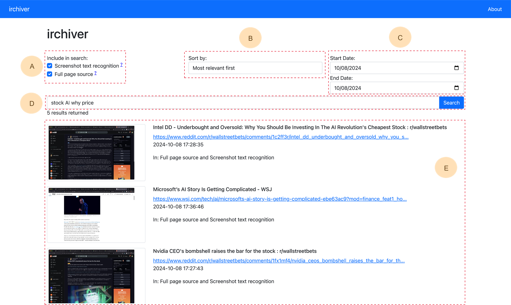
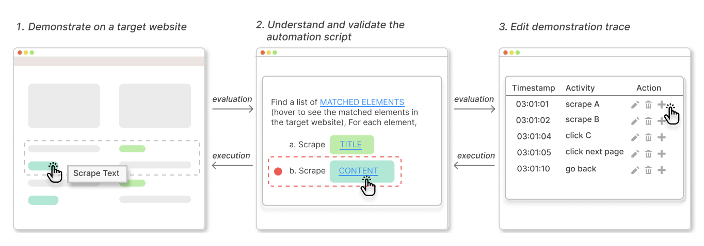

Zhicheng Huang
Short Bio

I am currently a second-year student in the Sc.M. of Computer Science program at Brown University, working with the ATLAS Group under the mentorship of Nikos Vasilakis and the Brown HCI Group under the mentorship of Jeff Huang. Previously, I received the B.S. degree in Computer Science and Cognitive Science from the University of Michigan, Ann Arbor.
Instead of relying only on centralized platforms to manage people’s data, I believe in an information ecology where people could easily (1) Curate, (2) Manage, (3) Make Sense of, and (4) Process any data that matters to them. Moreover, the tools people use to achieve this ecosystem should be user-centric, require minimal to no programming, and contribute to the overall societal conviviality.
Research Interest
The list below shows what I have worked on or am currently working on to achieve this vision. These efforts span across Programming Languages, Human-Computer Interaction, and Systems.
- Curate Data: I previously worked on helping non-programmers generate programs to scrape web data with minimal demonstration. I was mentored by Xinyu Wang and Tianyi Zhang and mentored by Yan Chen.
- Manage Data: I am currently working on irchiver, a personal web archive that takes an information-centric approach to provide full-text search of exactly what people see on the web, augmenting with visual snapshots. I am mentored by Jeff Huang.
- Make Sense of Data: I am currently working on a system that helps people express and structure their mental models during exploratory search in order to make task handoffs more smooth in collaborative sensemaking settings. I am mentored by Niki Kittur, Sherry Wu, and Jeff Huang.
- Process Data: I am currently working on a system that provides fault-tolerant distributed execution for shell scripts without rewriting the script. This is the latest extension of the PaSh family. I am mentored by Nikos Vasilakis.
Publications [ Google Scholar]
-

CHIIR 2025The 2025 ACM SIGIR Conference on Human Information Interaction and RetrievalPDF Accepted -

UIST 2023Proceedings of the ACM Symposium on User Interface Software and Technology, 2023 -
 PLDI 2022
Proceedings of the ACM SIGPLAN Conference on Programming Language Design and Implementation, 2022
PLDI 2022
Proceedings of the ACM SIGPLAN Conference on Programming Language Design and Implementation, 2022
Contact
Email:Email2: